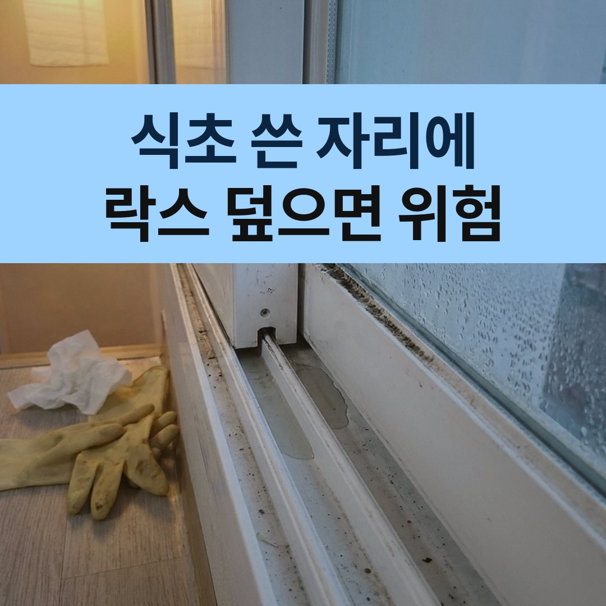
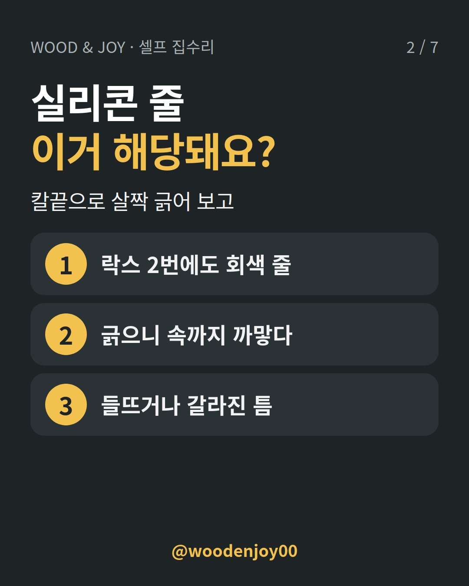
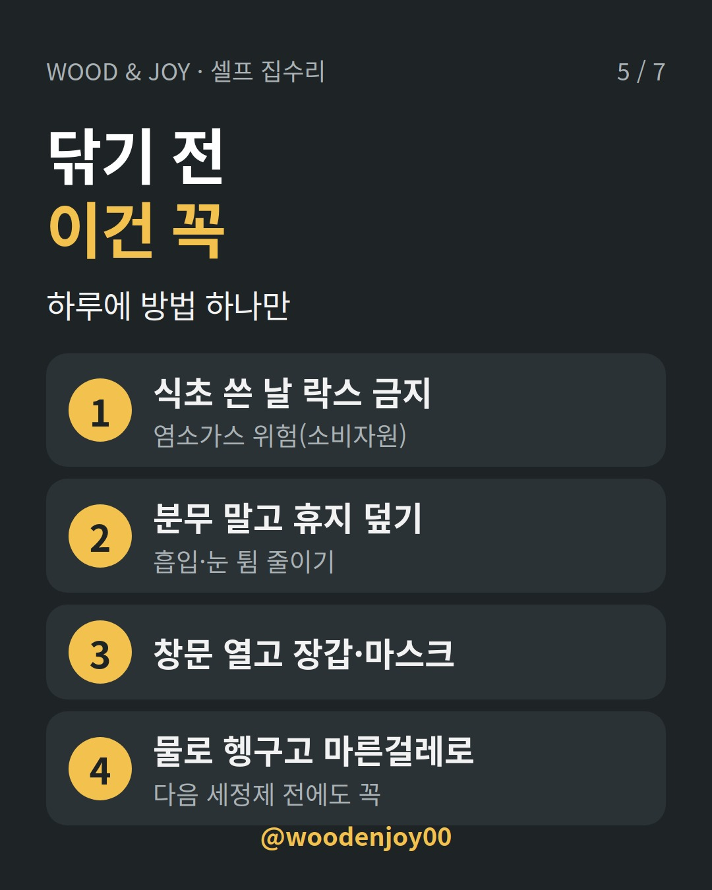
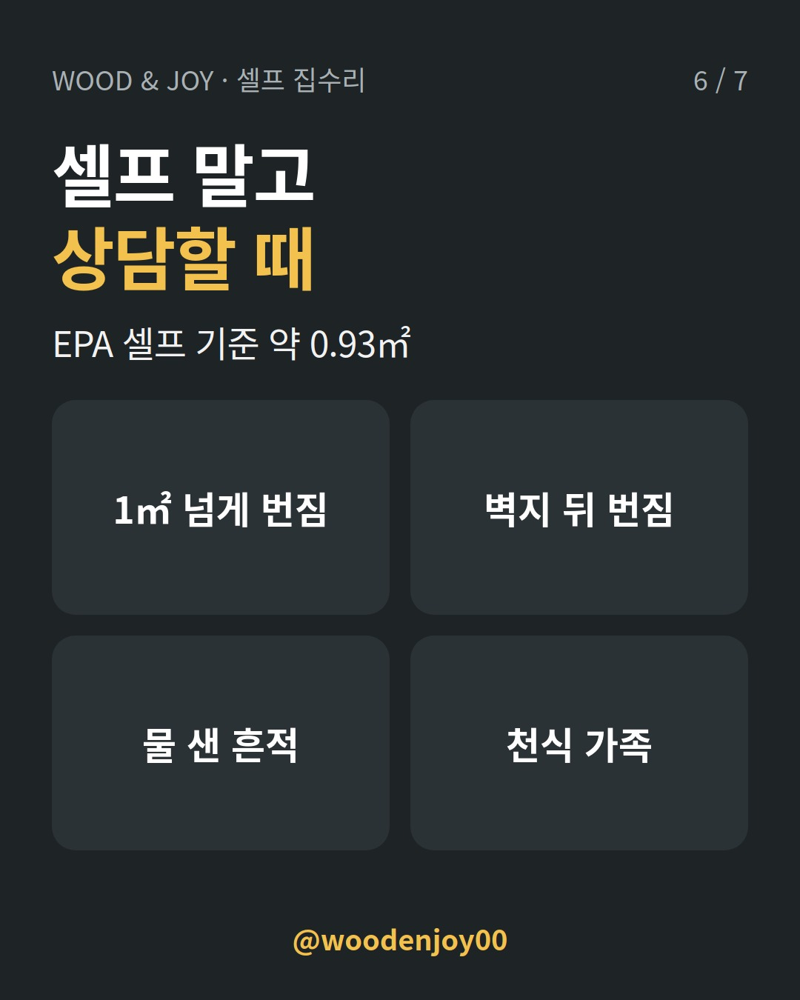

이 포스팅은 쿠팡 파트너스 활동의 일환으로, 이에 따른 일정액의 수수료를 제공받습니다.
창틀 실리콘에 락스 휴지를 두 번 덮었는데도 회색 줄이 남았다면 곰팡이가 실리콘 속까지 들어간 거예요. 더 닦기보다 다 뜯고 새로 쏘는 게 맞고, 닦을 때는 식초 쓴 날 락스를 바르지 마세요.

창문 실리콘 곰팡이는 대부분 결로 물에서 시작해요. 안팎 온도 차로 유리에 맺힌 물방울이 흘러내려 실리콘 줄에 고이거든요.
미국 환경보호청(EPA)은 실내 습도를 60% 아래, 가능하면 30~50%로 두라고 안내해요. 창가 습도 재는 법은 창문 결로방지 테이프 붙였는데 유리는 그대로? 습도 60%부터 보세요에 정리해 뒀어요.
곰팡이가 실리콘 겉이 아니라 안쪽까지 뿌리를 내렸기 때문이에요. 칼끝으로 실리콘 겉을 살짝 긁어 보면 바로 알 수 있어요.
솔로 박박 문지르면 손해예요. 잔 흠집에 물기와 먼지가 고여 곰팡이가 더 빨리 다시 핍니다. 약제를 덮어 두는 시간으로 지우세요.

락스 성분 곰팡이 제거제가 식초·구연산·산성 욕실세정제와 만나면 염소가스가 생길 수 있어요. 한국소비자원이 곰팡이 제거용 욕실세정제를 시험하면서 따로 경고한 내용이에요.
일반 마스크로는 염소가스를 못 막아요. 섞지 않는 게 먼저예요.

글마다 1:5, 1:10, 1:50으로 제각각이라 제품 라벨에 적힌 비율이 가장 정확해요. 질병관리청 소독 지침에서 화장실 소독 기준은 1,000ppm이고, 5% 원액이면 물과 1:50이에요.
| 선택지 | 이런 경우 | 주의할 점 | 대략 가격대 |
|---|---|---|---|
| 곰팡이 제거젤 | 표면 곰팡이, 창틀 옆면·위쪽 | 물기 닦고 발라야 효과 | 5천~1만 원대 |
| 뿌리는 곰팡이 제거제 | 넓은 창틀 바닥 | 흡입·눈 튐 주의 | 5천~1만 원대 |
| 실리콘 재시공 | 속까지 검음, 들뜸·갈라짐 | 다 뜯고 쏘기, 덧쏘기 금지 | 건·도구 포함 1만~3만 원대 |
(2026년 11월 기준, 판매처·용량마다 달라요)
👉 곰팡이 제거젤 — 긁어 보니 안쪽이 하얀 표면 곰팡이, 창틀 옆면·위쪽처럼 액체가 흘러내리는 자리
👉 뿌리는 곰팡이 제거제 — 넓은 창틀 바닥에 표면 곰팡이가 번졌고 휴지에 적셔 덮어 쓸 사람
재시공으로 간다면 실리콘 종류부터 확인하세요. 실리콘 쏘는법, 초산·비초산·수성 잘못 고르면 다시 뜯어요
다시 생기지 않게 하려면 창가 습도를 숫자로 보는 게 빨라요. 디지털 온습도계
면적으로 나누면 쉬워요. EPA는 곰팡이 핀 면적이 약 0.93㎡(가로세로 약 1m) 미만이면 대개 직접 제거할 수 있다고 봐요.
셀프: 창틀 실리콘 한두 줄, 1㎡ 미만 / 업체·관리사무소 상담: 1㎡ 넘게 번짐, 벽지 뒤까지 번짐, 물 샌 흔적
곰팡이에 노출되면 알레르기 반응이나 천식 발작이 생길 수 있어요. 천식·알레르기가 있는 가족은 작업을 맡지 말고, 증상이 있으면 의사와 상담하세요.

Q. 곰팡이 위에 실리콘을 덧쏘면 안 되나요?
곰팡이가 남은 실리콘 위에 쏘면 다시 올라오고 접착력도 약해 들뜨기 쉬워요. 다 뜯고 쏘세요.
여러분 집 창틀 곰팡이는 실리콘 줄에 있나요, 창틀 바닥에 있나요? 댓글로 알려 주세요.
오늘 저녁엔 실리콘 한 군데만 칼끝으로 긁어 보세요.